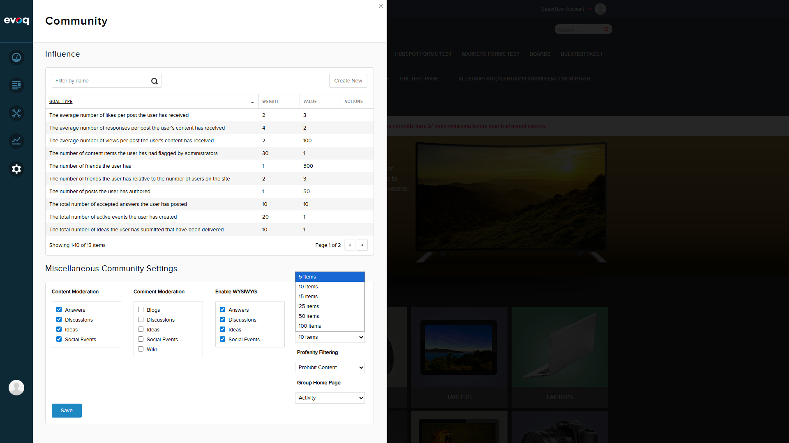
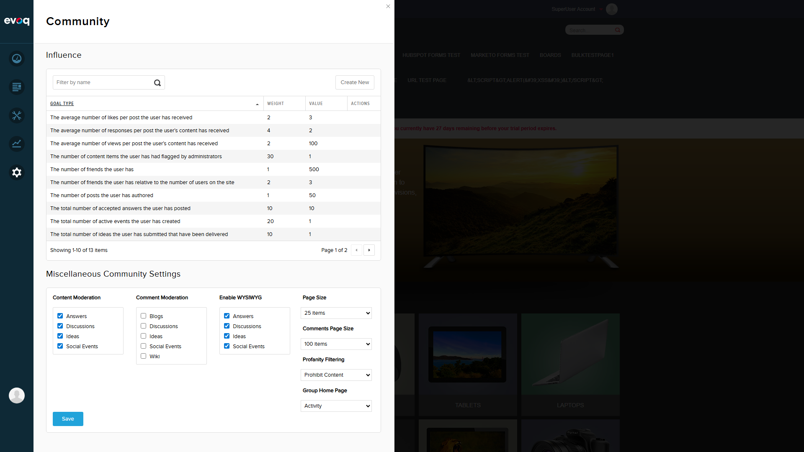

Test Summary
Test Results Overview
| Test Scenario |
Status |
| Verify dropdown shows all available options (5, 10, 15, 25, 50, 100) |
PASS |
| Default value is 5 items |
PASS |
| Set comments page size to 5 items |
PASS |
| Set comments page size to 10 items |
PASS |
| Set comments page size to 15 items |
PASS |
| Set comments page size to 25 items |
PASS |
| Set comments page size to 50 items |
PASS |
| Set comments page size to 100 items |
PASS |
| Save settings and verify persistence |
PASS |
Test Scenario 1: Login and Navigate to Community Settings
Objective: Access the Comments Page Size Settings in the Community Settings panel
- Navigate to http://localhost:8081/Login
- Login with host credentials (host / Pass123456)
- Community Settings panel opens automatically via PersonaBar
Status: PASS
Observation: Successfully logged in as SuperUser Account and Community Settings panel loaded automatically.

Test Scenario 2: Verify All Dropdown Options
Objective: Confirm that the Comments Page Size dropdown contains all expected options
- Locate the "Comments Page Size" dropdown in the Miscellaneous Community Settings section
- Click on the dropdown to expand options
- Verify all options are present: 5, 10, 15, 25, 50, 100 items
Status: PASS
Observation: All 6 page size options are available in the dropdown:
- 5 items (default)
- 10 items
- 15 items
- 25 items
- 50 items
- 100 items
Test Scenario 3: Test Each Page Size Option
Objective: Verify each page size option can be selected successfully
- Select "10 items" - Verify selection updates
- Select "15 items" - Verify selection updates
- Select "25 items" - Verify selection updates
- Select "50 items" - Verify selection updates
- Select "100 items" - Verify selection updates
Status: PASS
Observation: All page size options can be selected without any issues. The dropdown correctly updates to show the selected value.

Test Scenario 4: Save Settings and Verify Persistence
Objective: Confirm that the selected Comments Page Size persists after saving and page refresh
- Set Comments Page Size to "100 items"
- Click the "Save" button
- Verify success notification appears
- Refresh the page (navigate away and back)
- Re-open Community Settings and verify "100 items" is still selected
Status: PASS
Observation:
- Save button successfully saved the settings
- Success notification "Item successfully saved." appeared
- After page refresh, Comments Page Size remained at "100 items"
- Persistence is working correctly via CmxSettingsController


Technical Details
Relevant Code Files
src/Modules/Evoq.PersonaBar.CommunitySettings/Services/CommunitySettingsController.cs - Backend API controller handling GetSettings and SaveSettingssrc/Modules/Evoq.PersonaBar.CommunitySettings/admin/personaBar/scripts/CommunitySettings.js - Frontend JavaScript handling UI and AJAX calls
API Endpoints Used
| Endpoint |
Method |
Description |
| /API/PersonaBar/CommunitySettings/GetSettings |
GET |
Retrieves current community settings including CommentsPageSize |
| /API/PersonaBar/CommunitySettings/SaveSettings |
POST |
Saves community settings including CommentsPageSize |
Data Flow
- UI loads and calls
getSettings() to fetch current values
settingsViewModel.commentsPageSize observable is bound to the dropdown- User selects a value, updating the observable
- User clicks Save, triggering
saveSettings()
CmxSettingsController.Instance.SaveCmxSettings() persists the value
Conclusion
All test scenarios for the Comments Page Size Settings feature have PASSED.
The feature correctly:
- Displays all 6 pagination options (5, 10, 15, 25, 50, 100 items)
- Defaults to 5 items for new installations
- Allows selection of any available option
- Saves the selected value via the API
- Persists the value across page refreshes
No issues or bugs were identified during testing.